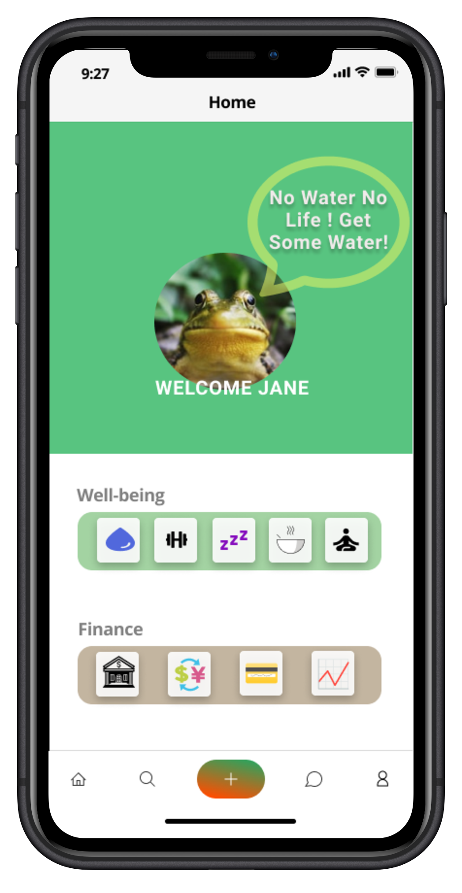
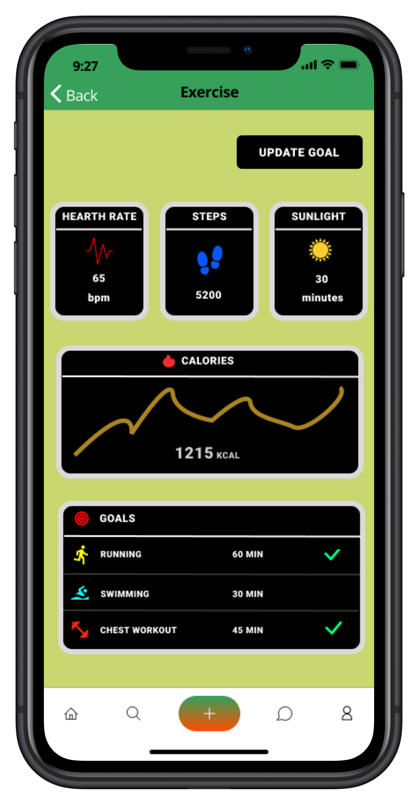
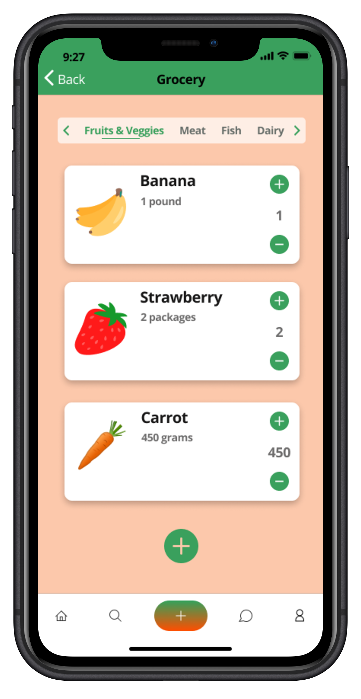
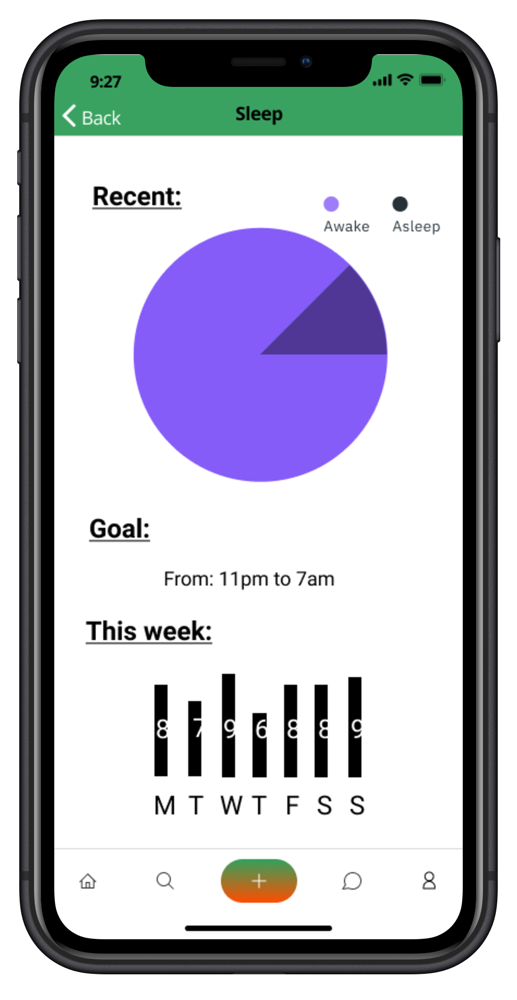
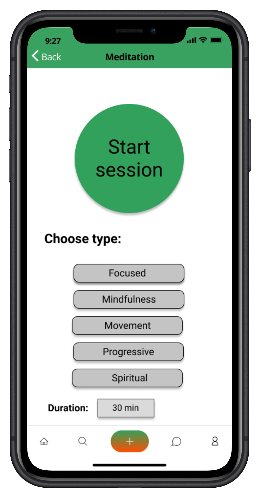
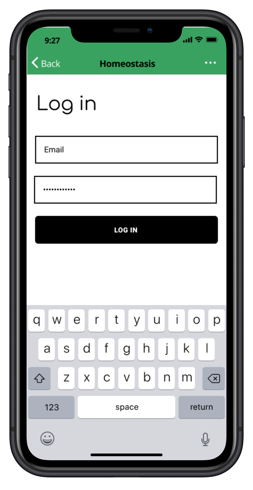
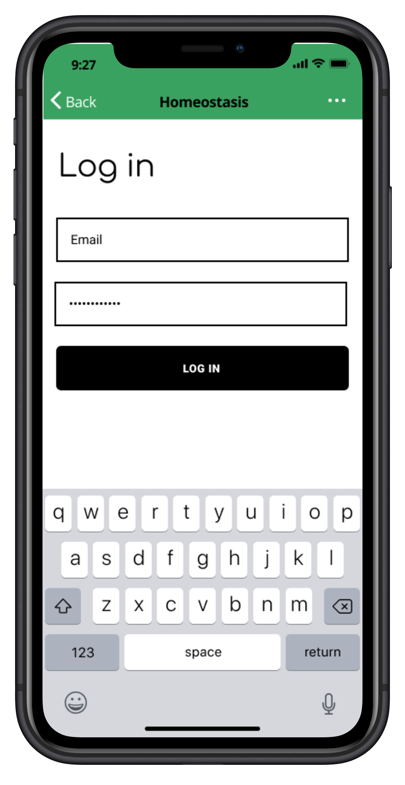

In today’s society, digital devices are within reach.
Whether we like it or not, electronic devices have become a major part of our lives.
Whether it be to order food, chat with a friend or watch a movie, the average amount of screen time is 11 hours per day in North America [1].
The number is only getting worst with the onset of the Covid-19 pandemic which forced many of us to move our daily activities to the digital screens.
In fact, it is estimated that around 42% of people have shifted to working from home and many students are also being taught through a screen. [2]
Our devices allow us to communicate with loved ones, shop, learn, transfer money, order food, book a trip and many other useful features. Super apps have made it even simpler for us by combining many services in one single application.
While our devices have proven to be very useful, during the Covid-19 pandemic,
by helping us feel less alone through communication with friends and family or by keeping us entertained,
it is important to understand that an excess usage of these devices can interfere with our physical and mental health.
Super apps have gained popularity over the last decade as they offer an all-in-one solution to many user needs.
However, the most popular super apps are mainly used in Asia, and they do not consider the impact of extended usage on their user's well-being.
Furthermore, there exists many applications which allow users to avoid excess screen time, but these apps often lack features and require a paid subscription.
Current Market
Note: Please click on each item below to expand or collapse
Released in 2011, the super app WeChat has seen incredible success in the Chinese marketplace.
This super app has an estimated 1 billion monthly users. It is an all-in-one application as it
offers a wide range of services such as messaging, streaming, gaming, payment, transportation and many more.
-
PROS
- All in one application offering an extensive list of functionalities.
- Users can perform financial transactions, play games, shop, communicate and watch entertainment.
-
CONS
- Does not provide any well-being features
- Excess screen time is not monitored
- User activity is tracked and share
- Not used internationally
Click here to explore WeChat
This app allows users to improve their relationship with digital devices. In fact, this app allows users to block websites and apps in order to stay focused, productive and limit excess screen time.
-
PROS
- Helps reduce doomscrolling
- Helps reduce wasting precious time
- Helps build positive screen habits
- Can prevent late night screen time affecting users sleep
-
CONS
- Mainly focused on time management
- Does not promote any physical well-being features
- Users must pay $6.99 a month to use the application.
Click here to explore Freedom
This app helps users better understand their screen consumption. With over 9 million users, Moment provides screen time trackers and free daily coaching to help users build healthy screen habits. Users can share their journey within a friends group which creates a sense of community.
-
PROS
- Reminders every 15 minutes if you exceed the screen time limit.
- Ability to create and join groups
- Free daily guided coaching
-
CONS
- Easy to simply ignore reminders
- Only focused on screen time metrics
- Does not offer health features to improve user’s well-being
- Only available on the Apple App Store
Click here to explore Moment
Best Self-Care app of 2018, Fabulous helps users build healthy habits by setting up routines. The app uses behavioral science to help users develop self-discipline, structure and long lasting health habits into their daily lives.
-
PROS
- Daily coaching
- Notifications telling you to take action
- Join a community of friends
-
CONS
- Does not track excess screen time
- Overwhelming amount of choices and options affects the ease of use of the app
- Requires $29.99 anual subscription
Click here to explore Fabulous
Survey
We created a survey to better understand the needs of our users. Amidst this pandemic, there are multiple ways
to encourage healthier habits, but collecting data is necessary to uncover what these issues are that the superapp
is seeking to improve. We used Google Forms to distribute our survey that was in compliance with the professor's
guidelines for collecting data. The survey can be found here and the data could be found in this sheet.
The collected data was then placed into the following bar and pie charts for a more comprehensive understanding of said data.
This chart is pertinent as it shows that the participants use various types of applications, but among these a messaging application seems to be the highest used. This will lead us to design a space for a chat in the bottom navigation bar.


In regards to the previous charts, we noticed that the participants seek more than ever to connect with others, yet they feel immensely isolated. By trying to find this connection, they deem their screen habits poor as they spend hours and hours on their devices. In consequence, their mental health is also negatively affected by their unhealthy screen habits.
After researching other super apps and understanding how they work and what they offer, we were able to
come up with features that are not all present in the current super apps. In order to
understand our users, we gave out a questionnaire to gather data. It helped us to write the analysis section,
understand how the users feel vis-à-vis screen time and what kind of well-being features they would like
to have on their phone.
User Personas
We created user personas of people who would use our app based on the data we received in the survey.
There are four different characters with different demographics. The user personas describe the personal
information of each person, as well as a general biography of their life. There are different
sections about their goals and frustrations regarding their experience with super apps. General information
such as their screen habits and personality are also displayed.
Storyboard
Storyboards are a visual way to narrate a user's experience. It shows in linear time a description of the user's needs
as well as the provided solution through drawings. It is a perfect way to illustrate a story and in this particular case,
it is the story and experience of Jalen that we will narrate.
Journey Map
Journey maps sketch out the user experience of specific people while using the application.
This journey map describes the experience of Jalen Robinson, one of our user persona.
It helps us understand the good and bad moments he will encounter when opening the app up until
he closes it. The sections illustrate what Jalen thinks, does and feels throughout every step he
takes on the application.
User Flow
The user flowchart describes the way users will navigate our application. From the start,
the user has different options to choose and he can choose different paths each time.
 Sketches
Sketches
We started designing our app by doing sketches. It is a quick way to show the different screens and
features of our system. It can easily be changed without much effort. They were done by the team after
brainstorming on what features can be implemented and how the UX can be pleasable.
Iteration 1 sketch
Iteration 2 sketch

Wireframes
The wireframes below represent the skeletal framework of our application. They are practically the same
as the sketches, but made electronically. They are not complex, neither do they contain color. They only
provide the basics of the application in order to create the mockups.
Color Palette
We thought of the color of green which symbolizes nature and the natural world. It is also known
for being associated to many other things such as good luck, health or even money. The idea of health
and nature lead us to choose this color palette because of its calming effect and its association to
nature. We thought that this can help our users connect to the outside world around them during this
pandemic. According to our study, there was a great need for connection, and we think that the
green color may do just that, as well as give a calm and soothing warmth.
Alternative of different shades
Typography
We chose the Open Sans designed by Steve Matteson.
It is the second most popular typeface on Google's registry of fonts. This means
that is is highly recognizable and therefore, familiar to the users.
Mockups
Sign up / Log in
The users can sign up using either their email, or a connected service such as Facebook, LinkedIn or Google.
Setting up the goals
After having registered on the platform, the user is required to set goals that will reflect healthier screen habits.
Our six main health features are water and food consumption, limitation on screen time, good rest,
physical activity as well as meditation. Through these measures of well-being, we intend to promote a healthy lifestyle.
Home Page
The home page is where the user can discover all the apps, and features of the super app. From finances, to transportation, to
purchases, it covers all the everyday interactions that a user may need to accomplish within a given day.

Health Features
As mentioned prior, these are the health apps that will promote a healthier well-being for our users. We designed the screens in a way
that effectively allows the user to view and understand their progress within a given day. Through images, graphs, and charts, we hope
to facilitate the user's journey in finding a balance between screen time and healthy lifestyles.





Editing these goals
These portions are straight forward, they are ways in which the user can alter their goals to better fit their needs or their progress.
Pop-up screens for encouraging health habits
These pop up modals encourage its user to be aware of their health goals. Whether it is to notify them to take a break, or drink water,
the app acts as an accountability agent to announce that they need to find a balance based on the goals that they have set upon registration.
Prototype
To sum it all up, it was interesting to conduct research on the health habits and needs of a small portion of the population amidst this pandemic.
One thing is certain, the pandemic has had a great effect on people's mental health. Many of our participants (most of which are students) have been feeling
anxious, stressed, and even depressed. The most staggering statistic was that many of our participants mentioned having a lack of motivation.
The data speaks for itself that many individuals seek to connect with others and thus, have been spending a considerable portion of time in front of a screen.
Some of these persons have noticed the changes in their mental health and sleep deprivation is vastly linked to their screen time.
HomeoStasis can be beneficial in providing healthy screen habits for its users. Through the research of the users needs,
we have decided to focus on features that allow its users to have a balance to encourage a healthier lifestyle. From drinking water,
to taking breaks and exercising, to sleeping and meditating, and even doing their groceries, we hope to pursue just that. We hope to really
have an impactful change for our users, that they may feel healthier and be healthier spiritually, physically, and mentally.
[1] Laidlaw, Katherine, et al. “We Use Screens for 11 Hours a Day. At What Cost?” CPA Canada, 9 June 2019, www.cpacanada.ca/en/news/pivot-magazine/2019-09-06-screen-time.
[2] University, Stanford. “A Snapshot of a New Working-from-Home Economy.” Stanford News, 26 June 2020, news.stanford.edu/2020/06/29/snapshot-new-working-home-economy/.
[3] Kharpal, Arjun. “Everything You Need to Know about WeChat - China's Billion-User Messaging App.” CNBC, CNBC, 4 Feb. 2019, www.cnbc.com/2019/02/04/what-is-wechat-china-biggest-messaging-app.html.
[4] WeChat/Weixin for Web, web.wechat.com/.
[5] Freedom.to. “Internet, App and Website Blocker.” Freedom, freedom.to/.
[6] Moment Health Inc., inthemoment.io/.
[7] “Build Better Habits & Achieve Your Goals.” Fabulous, www.thefabulous.co/.


_iphonexrspacegrey_portrait.png)
_iphonexrspacegrey_portrait.png) 



.png)
.png)
.png)
.png)